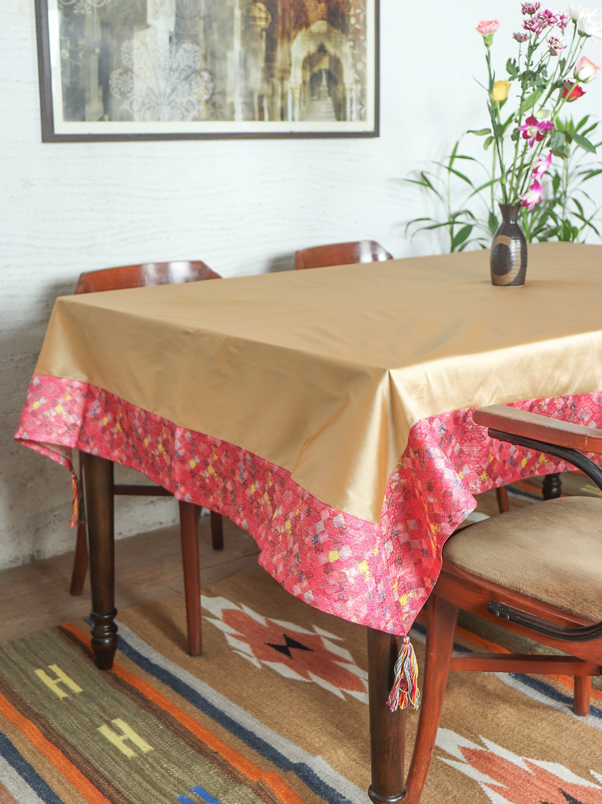

Kalamkari & TextilesPhoto: Table Cover Floral Pattern with Panel Stich and Tassels Brocade Silk · Source and licence
Kanchipuram · Tamil Nadu
Handloom Silk Border Table Cloth
₹5,200
A table cloth concept that borrows the rhythm of a handloom border. The supplied weaving photograph shows the threads and loom process; confirm the actual fibre content, border width and cleaning method with the maker. Textile work is planned across a long surface; line, repeat, dye and border all need to stay in rhythm. Follow the maker's care instructions for dyes and fibre. Prototype listing: price and dimensions are estimates for this project and must be confirmed with the maker before purchase.
MATERIALSSilk-cotton blend; confirm exact fibre
TECHNIQUEHandloom weaving with contrast border
APPROX. DIMENSIONS110 × 150 cm (approx.)
AVAILABLE STOCK8 pieces
க
MAKERTN ARTISAN Studio
Kalamkari & Textiles
Customer reviews
No reviews yet.